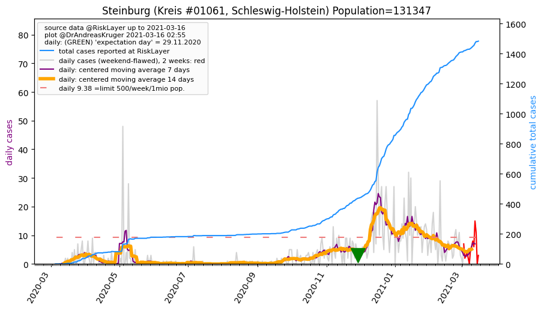
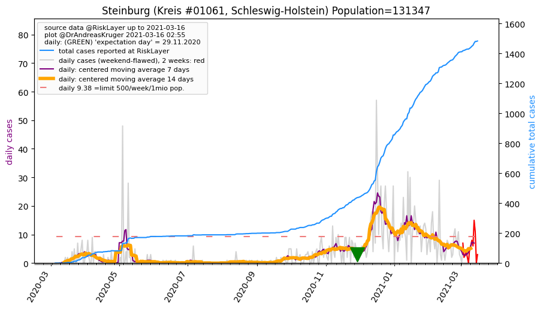

")

")
| Dithmarschen_KR (0.0 km) |
Steinburg_KR (35.3 km)  |
| Rendsburg-Eckernförde_KR (47.3 km) |
All plots are regenerated with new data every night. Beware this temporary hotspot is an experimental page - it might get removed, so please do not link to it. Instead link to project http://tiny.cc/cov19de.